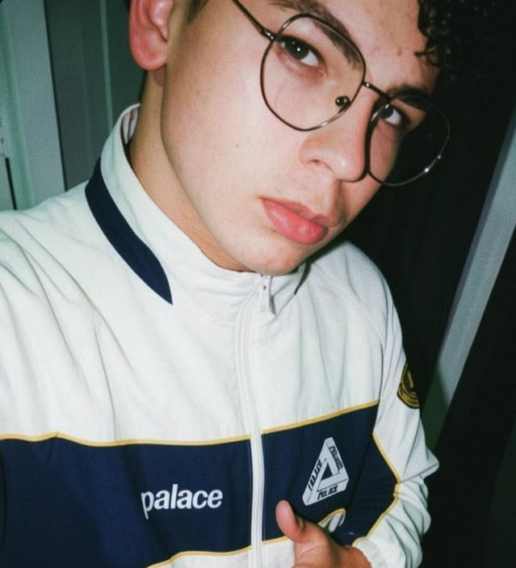
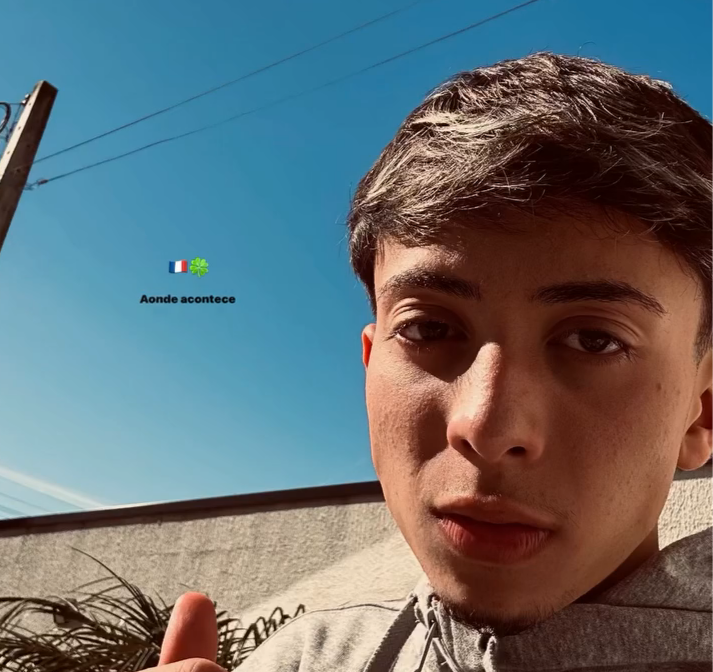
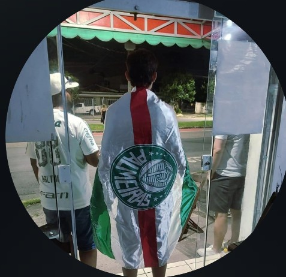
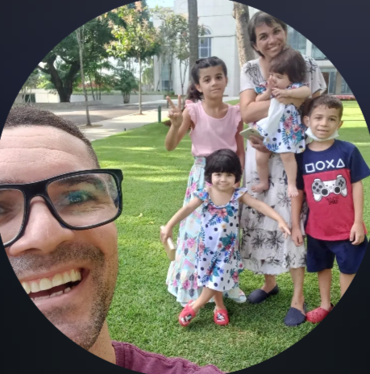
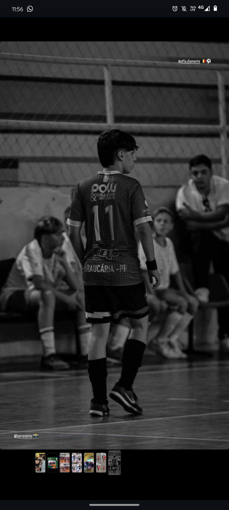
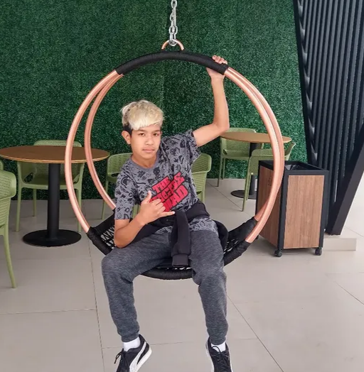
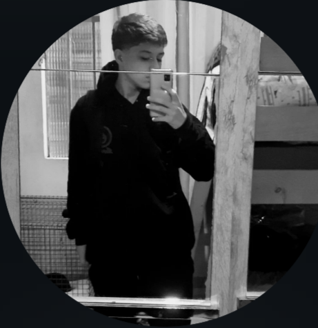
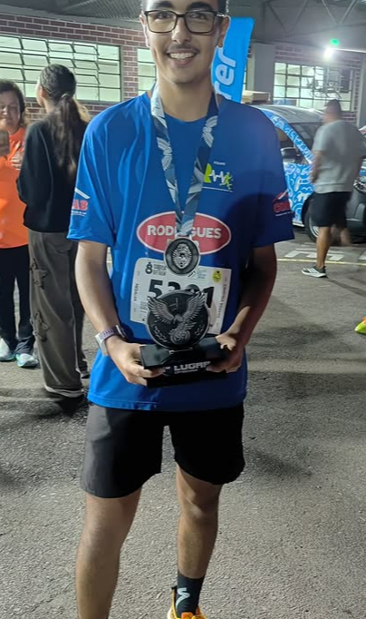

Grêmio Foot-Ball Porto Alegrense
.png)
.png)
.png)
Fundação
O Grêmio foi fundado em 15 de setembro de 1903, em Porto Alegre (RS). A história começou quando o paulista Cândido Dias da Silva emprestou uma bola de futebol durante uma exibição do Sport Club Rio Grande. Em troca, aprendeu como fundar um clube. Oito dias depois, 32 jovens se reuniram no Salão Grau (Rua José Montaury) e oficializaram a criação do Grêmio Foot-Ball Porto Alegrense. Carlos Luiz Böhrer foi o primeiro presidente. As cores (azul, preto e branco) representam a tradição tricolor do clube, que rapidamente se tornou um dos maiores do Sul do Brasil.
Titulos do Grêmio
O Grêmio é um dos clubes mais vitoriosos do Brasil e da América do Sul: Mundial: 1 Copa Intercontinental (1983) Copa Libertadores da América: 3 (1983, 1995 e 2017) Recopa Sul-Americana: 2 (1996 e 2018) Campeonato Brasileiro Série A: 2 (1981 e 1996) Copa do Brasil: 5 (1989, 1994, 1997, 2001 e 2016) Supercopa do Brasil: 1 (1990) Campeonato Brasileiro Série B: 1 (2005) Campeonato Gaúcho: 44 títulos (recorde de hegemonia estadual, com sequências históricas como o heptacampeonato nos anos 60) É o primeiro clube fora da região Sudeste a conquistar títulos continentais e mundiais.
Principais jogadores
O Grêmio revelou e contou com grandes nomes ao longo de mais de 120 anos: Renato Gaúcho: Maior ídolo da história. Herói da Libertadores e Mundial de 1983 como jogador, e campeão da Libertadores 2017 como técnico. Jardel: Artilheiro decisivo, especialmente na Libertadores de 1995. Ronaldinho Gaúcho: Revelado pelo clube, um dos maiores talentos do futebol mundial. Outros grandes ídolos: Hugo de León (capitão em 1983), Danrlei (goleiro dos anos 90), Paulo Nunes, Dinho, Alcindo (maior artilheiro histórico), Tarcísio, Everaldo, Geromel, Kannemann, Luis Suárez (passagem marcante) e muitos outros. O clube é conhecido por formar talentos e ter times marcantes, especialmente nas décadas de 80 e 90. O Grêmio é chamado de "Imortal" pela torcida, representando garra, tradição e superação. Hoje manda seus jogos na moderna Arena do Grêmio e segue como um dos grandes do futebol brasileiro.








